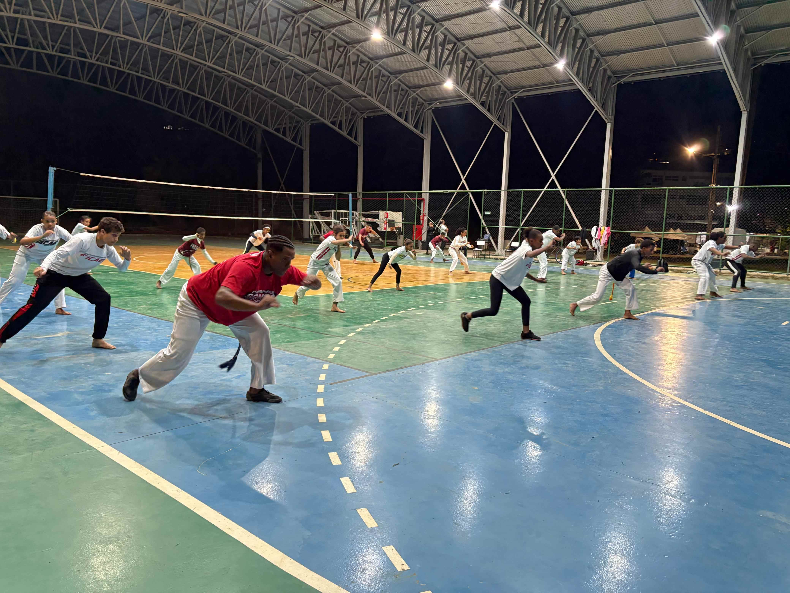

Evento Cultural - Roda Aberta
Um encontro marcante reuniu mestres e alunos para celebrar a capoeira e a cultura local.
Leia maisBem-vindo à Plataforma Digital do projeto Capoeira Viva – Memória, Educação e Tecnologia, uma iniciativa que une tradição e inovação para preservar e compartilhar a rica história da capoeira em Ponte Nova, Minas Gerais.
"A capoeira é muito mais que uma expressão cultural ou uma prática esportiva — ela é resistência, identidade, arte e pertencimento. Reconhecida como Patrimônio Cultural Imaterial da Humanidade, essa arte-luta carrega em seus movimentos e ritmos séculos de história e força coletiva.
Em Ponte Nova, Minas Gerais, a capoeira ocupa um espaço especial na vida comunitária. Ela educa, socializa, fortalece vínculos e preserva memórias. O projeto Capoeira Viva nasce para documentar, valorizar e difundir essa tradição por meio da inovação e do acesso à informação."
Nosso projeto tem como missão preservar a memória da capoeira pontenovense, promover a educação popular por meio da cultura, e fortalecer a identidade comunitária através da valorização dos saberes tradicionais.
A capoeira chegou a Ponte Nova como em muitos outros lugares do Brasil: pela força da oralidade, do corpo, da resistência e da coletividade. Nas praças, nos bairros, nas escolas e nas rodas de rua, ela se consolidou como uma prática que educa, acolhe e forma cidadãos.
A capoeira tem suas raízes na história da escravidão no Brasil. Durante os séculos XVI a XIX, milhões de africanos foram trazidos à força para o território brasileiro, principalmente de regiões da África Ocidental e Central. Esses povos trouxeram consigo suas tradições, crenças, músicas, danças e formas de luta. Nesse contexto de opressão, os escravizados desenvolveram a capoeira como uma forma de resistência cultural e física. Disfarçada de dança, com movimentos ritmados e acompanhada por cantos e instrumentos, a prática permitia treinar a defesa pessoal sem levantar suspeitas dos senhores de engenho e das autoridades coloniais. A capoeira, portanto, não nasceu de um único lugar ou povo, mas da fusão de diferentes culturas africanas que se encontraram no Brasil. Ao longo do tempo, ela se consolidou como um símbolo de luta pela liberdade e pela preservação da identidade cultural dos negros escravizados. Hoje, a capoeira é reconhecida mundialmente como patrimônio cultural brasileiro, misturando arte, música, esporte e história de resistência.
Este espaço busca documentar e compartilhar essas vivências locais, valorizando a contribuição de mestres, grupos e comunidades para a construção da identidade cultural da cidade.
Em 2014, a capoeira foi reconhecida como Patrimônio Cultural Imaterial da Humanidade pela UNESCO. Em Ponte Nova, propomos o Registro Municipal da Capoeira, para garantir que sua história, seus protagonistas e sua prática sejam protegidos, valorizados e difundidos como bem cultural da cidade.
Conheça os marcos importantes da trajetória da capoeira em Ponte Nova, desde as primeiras rodas até os dias atuais. Um mergulho cronológico nos fatos, encontros e eventos que moldaram essa tradição viva.
Depoimentos e perfis dos(as) mestres(as), contramestres, professores(as) e outros personagens que ajudaram a construir a história da capoeira na cidade. Aqui, a oralidade vira memória digital.
Almir Farias Barros iniciou na Capoeira em 1987, com o Mestre Negrito. Em 1994, filiou-se à Fundação Internacional Capoeira Artes das Gerais (FICAG), sob a liderança do Mestre Museu, onde encontrou a organização e os princípios que buscava para fortalecer e expandir seu trabalho na cidade de Ponte Nova. Entre 1997 e o início de 1999, teve uma passagem pelo grupo Negaça, sob a liderança do Mestre Aranha. Em 1999, retornando à FICAG, fundou sua própria academia de Capoeira no bairro Santo Antônio, localizada atrás da antiga Sorveteria Sabor e Arte (atualmente Ice Granato), oferecendo excelente estrutura para os treinos. Contra-Mestre Almir foi o principal responsável pela promoção da Capoeira em todas as classes sociais da cidade de Ponte Nova, promovendo uma transformação técnica e democratizando o acesso à arte e à cultura por meio de projetos e ações contínuas em academias, escolas e projetos sociais. Reconhecido como um mestre formador de excelência, é responsável pela formação de diversos grandes capoeiristas na cidade de Ponte Nova e em toda a região. Esse trabalho organizado e consistente fez com que o grupo se tornasse reconhecido como um dos mais importantes da região — não apenas pela formação de atletas de qualidade, mas, sobretudo, pelo compromisso com a formação de cidadãos.
Acesse documentos, transcrições, áudios e entrevistas com figuras importantes da capoeira de Ponte Nova.
Leia a biografia do Mestre André Silva Mendes, um dos principais responsáveis pela disseminação da capoeira na cidade.
Acessar biografiaLeia também a biografia do Contra-Mestre Almir Farias Barros, que tem uma trajetória marcante na capoeira pontenovense.
Acessar biografiaExplore nossa galeria audiovisual com registros de rodas, oficinas, encontros culturais, entrevistas e manifestações ligadas à capoeira pontenovense.
Aqui você encontra materiais didáticos e recursos pedagógicos voltados para educadores, estudantes e projetos sociais que desejam trabalhar a capoeira em sala de aula.
Nosso objetivo é oferecer conteúdos que aproximem a tradição da capoeira do ambiente escolar, estimulando valores como respeito, coletividade, consciência histórica e expressão cultural. Esses materiais podem ser utilizados em aulas de Educação Física, História, Música ou em atividades interdisciplinares, sempre de forma acessível e inclusiva.
Além dos textos e apostilas, disponibilizamos vídeos, sequências didáticas e propostas de atividades que auxiliam professores e mediadores a integrar a capoeira em diferentes contextos. Acreditamos que a educação ganha força quando dialoga com a cultura popular, permitindo que crianças, jovens e adultos se reconheçam como parte de uma herança viva e transformadora.
Explore, compartilhe e utilize os materiais para fortalecer a aprendizagem, a identidade cultural e a cidadania através da capoeira.
Acompanhe as oficinas, vivências e formações oferecidas pelo projeto. Aprenda na prática com mestres e educadores que trazem a capoeira como ferramenta de ensino e inclusão.
Espaço voltado para professores e gestores escolares interessados em inserir a capoeira nos projetos pedagógicos.
A capoeira, reconhecida pela UNESCO como Patrimônio Cultural Imaterial da Humanidade, é muito mais do que uma prática corporal: trata-se de uma manifestação cultural afro-brasileira que integra movimento, música, história, identidade e pertencimento. Na escola, ela pode ser inserida como recurso pedagógico transversal, dialogando com diversas áreas do conhecimento e promovendo aprendizagens significativas.
Do ponto de vista educacional, a capoeira contribui para o desenvolvimento integral do estudante. Seus movimentos trabalham a coordenação motora, o equilíbrio, a noção espacial e a consciência corporal, ao mesmo tempo em que estimulam a criatividade e a expressão individual. A musicalidade presente nas rodas fortalece a percepção rítmica e promove contato direto com instrumentos tradicionais, como berimbau, atabaque e pandeiro, estimulando a apreciação artística.
Além dos aspectos físicos e artísticos, a capoeira é um espaço privilegiado para o ensino de valores. A prática fomenta a disciplina, a cooperação, o respeito ao próximo e à diversidade, reforçando princípios de cidadania e convivência democrática. O estudo de sua história possibilita reflexões sobre a cultura afro-brasileira, a resistência à escravidão e a valorização das raízes culturais do país, atendendo às diretrizes da Lei 10.639/03, que estabelece a obrigatoriedade do ensino da história e cultura afro-brasileira nas escolas.
Para gestores escolares, a inserção da capoeira em projetos pedagógicos pode enriquecer o currículo, fortalecer o vínculo entre a comunidade escolar e seu território, além de ampliar o repertório cultural dos alunos. A capoeira pode ser trabalhada em aulas regulares de Educação Física, em projetos interdisciplinares ou como atividade extracurricular, favorecendo a integração entre corpo, mente e cultura.
Por sua versatilidade, a capoeira se adapta a diferentes faixas etárias e contextos escolares, podendo ser explorada de forma lúdica na Educação Infantil, como prática de movimento e socialização no Ensino Fundamental, e como reflexão histórica e cultural no Ensino Médio.
Em resumo: incluir a capoeira no ambiente escolar é uma oportunidade de valorizar a diversidade cultural, promover inclusão, desenvolver habilidades físicas e cognitivas, além de resgatar uma herança cultural brasileira de profundo valor histórico e social.
Acompanhe as atualizações do projeto, cobertura de eventos, oficinas, rodas abertas, seminários e ações comunitárias que valorizam a capoeira em Ponte Nova.
Um encontro marcante reuniu mestres e alunos para celebrar a capoeira e a cultura local.
Leia maisParticipantes aprenderam a construir e tocar o berimbal.
saiba maisO projeto Capoeira Viva é construído com a força da comunidade. Cada mestre, aluno, parceiro e admirador da capoeira tem um papel essencial na preservação dessa história.
Participe das nossas rodas abertas, inscreva-se em oficinas, seja voluntário em eventos ou ajude a divulgar a capoeira em sua escola ou comunidade. Sua presença fortalece nossa rede e inspira novas gerações!
Tem uma história marcante com a capoeira? Fotos antigas, vídeos de rodas, músicas ou objetos históricos? Envie para nossa equipe e ajude a construir o acervo digital da capoeira em Ponte Nova. Seu relato pode virar destaque em nossa plataforma!
Se você representa uma empresa, escola ou coletivo, pode apoiar o projeto com patrocínio, doação de materiais, cessão de espaço para eventos ou divulgação das nossas ações. Juntos, podemos ampliar o alcance da capoeira e fortalecer a cultura local!
Entre em contato conosco pela seção Contato e saiba como participar.
Quer falar com a equipe do Capoeira Viva? Entre em contato e vamos conversar.